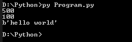

[Python] Redisデータベースに接続して使い方
こんにちは。明月です。
この投稿はPythonでRedisデータベースに接続して使い方に関する説明です。
RedisデータベースはRDB種類ではなく、NoSQL種類のKey-Valueタイプのデータベースです。簡単に共有メモリのデータベースです。以前の投稿でLinux環境にインストール及び使い方に関して説明したことがあります。
リンク - [CentOS] Redisデータベースをインストールする方法とコマンドを使い方
そのRedisデータベースをPythonで使ってみましょう。
PythonでRedisデータベースを使うためにはRedisライブラリをインストールするべきです。
pip3 install redis
私はもうインストールされているのでインストール済みで表示しますね。インストールをしてない方は上のコマンドでインストールしたら良いでしょう。
インストールしたらPythonソースでRedisを使ってみましょう。
# redisライブラリ宣言
import redis
# ホストとポート設定、データベースを設定してconnectionを取得
with redis.StrictRedis(host='192.168.0.201', port=6379, db=0) as conn:
# testをキーでhello world値を入力
conn.set('test', 'hello world')
# testをキーでデータを取得する。
data = conn.get('test')
# コンソール出力
print(data)
# ホストとポート設定、データベースを設定してpoolを設定
redis_pool = redis.ConnectionPool(host='192.168.0.201', port=6379, db=0, max_connections=4)
# poolからconnectionを取得する
with redis.StrictRedis(connection_pool=redis_pool) as conn:
# test1をキーでhello world1値を入力
conn.set('test1', 'hello world1')
# testをキーでデータを取得する。
data = conn.get('test1')
# コンソール出力
print(data)

基本的な使い方はkeyを利用してデータを入力して取得する関数です。
接続方法にはStrictRedis関数を利用して直接にconnectionを取得する方法があるし、poolをまず生成してpoolからconnectionを取得する方法があります。
どっちらかが良いか言うことは難しいですが、poolがコネクションを管理するので、リソース管理ではpoolの方が良いでしょう。上の例はシングルプロセスで動いているのでpoolを使わなくても特にコネクション管理が必要ないですが、マルチスレッド環境ならconnection管理が必要なのでpoolを使う方が良いということです。
# redisライブラリ宣言
import redis
# ホストとポート設定、データベースを設定してconnectionを取得
with redis.StrictRedis(host='192.168.0.201', port=6379, db=0) as conn:
# testをキーでhello world値を入力する、500秒の満了時間
conn.set('test', 'hello world', 500)
# testキーの満了時間を出力
print(conn.ttl('test'))
# 満了時間設定、100秒
conn.expire('test', 100)
# testキーの満了時間を出力
print(conn.ttl('test'))
# testをキーでデータを出力
data = conn.get('test')
# コンソール出力
print(data)
# すべてキーを削除
#conn.flushall()

上のソースはキーの満了時間設定です。単位は秒単位で設定できます。
次はRedisで使うListとMap、Set、SortedSetのデータタイプです。
# redisライブラリ宣言
import redis
# ホストとポート設定、データベースを設定してconnectionを取得
with redis.StrictRedis(host='192.168.0.201', port=6379, db=0) as conn:
# リストの左から入力する。
conn.rpush("list", "1");
# リストの右から入力する。
conn.lpush("list", "2");
# リストデータを出力 - 2, 1
for i in conn.lrange('list',0 ,10):
# コンソール出力
print(i)
# コンソール出力
print('lpop list')
# リストの左をpop - 2
print(conn.lpop('list'))
# コンソール出力
print('list')
# リストデータを出力 - 1
for i in conn.lrange('list',0 ,10):
# コンソール出力
print(i)
# 改行
print()
# Hashタイプのkey-value値を入力
conn.hset("map", "a", "1")
conn.hset("map", "b", "2")
conn.hset("map", "c", "3")
# Hashタイプのすべてデータを出力
print(conn.hgetall('map'))
# Hashタイプのa keyのデータ出力
print(conn.hget('map', 'a'))
# 改行
print()
# Setタイプの値を入力
conn.sadd('set', 'C')
conn.sadd('set', 'B')
conn.sadd('set', 'A')
# 重複は入力されない
conn.sadd('set', 'A')
conn.sadd('set', 'A')
# Setタイプの出力
print(conn.smembers('set'))
# Setタイプの値を入力 - 変数名 set1
conn.sadd('set1', 'A')
conn.sadd('set1', 'D')
# setとset1の積集合
print(conn.sinter('set', 'set1'))
# setとset1の和集合
print(conn.sunion('set', 'set1'))
# 改行
print()
# SortedSetタイプの値を入力
conn.zadd('sortedset', {'B': 1})
conn.zadd('sortedset', {'A': 3})
conn.zadd('sortedset', {'C': 0})
# 10個のデータ出力
print(conn.zrange('sortedset',0 , 9))
# 10個のデータ出力 - 降順
print(conn.zrange('sortedset',0 , 9, desc=True))
# 2個のデータ出力 - 降順
print(conn.zrange('sortedset',0 , 1, desc=True))
# すべてキーを削除
#conn.flushall()
Pythonは使う人により実装する仕方が違いますが、私はPythonでプログラムを作ることよりプロジェクトの補助手段としてバッチスクリプトなどを作成して使うことでよく活用します。
その状況で様々なローカルでデータを共有するかJavaやC#でRedisを使うならその値を確認してテストする目的でよく使います。
ここまでPythonでRedisデータベースに接続して使い方に関する説明でした。
ご不明なところや間違いところがあればコメントしてください。
- [Python] Redisデータベースに接続して使い方2022/02/21 18:23:49
- [Python] Seleniumライブラリを使う方法(自動ウェブテスト、ウェブスクレイピング)2021/10/25 19:29:00
- [Python] メール(smtplib)を送信する方法2020/07/27 18:38:43
- [Python] HttpConnection(requestsモジュール)でウェブサーバーで接続する方法2020/07/20 14:41:51
- [Python] Excel(openpyxl)を扱う方法2020/07/16 16:40:31
- [Python] ファイル圧縮、解凍(zipfile)する方法2020/07/14 19:14:22
- [Python] Apache cgiでPythonを使う方法2020/07/09 19:58:19
- [Python] Web serverを起動する方法(http.server)2020/07/09 00:13:13
- [Java] 61. Spring bootでRedisデータベースを利用してセッションクラスタリング設定する方法2022/03/01 18:20:52
- [Java] 60. Spring bootでApacheの連結とロードバランシングを設定する方法2022/02/28 18:45:48
- [Java] 59. Spring bootのJPAでEntityManagerを使い方2022/02/25 18:27:48
- [Java] 58. EclipseでSpring bootのJPAを設定する方法2022/02/23 18:11:10
- [Java] 57. EclipseでSpring bootを設定する方法2022/02/22 19:04:49
- [Python] Redisデータベースに接続して使い方2022/02/21 18:23:49
- [Java] Redisデータベースを接続して使い方(Jedisライブラリ)2022/02/16 18:13:17
- [C#] Redisのデータベースを接続して使い方2022/02/15 18:46:09
- [CentOS] Redisデータベースをインストールする方法とコマンドを使い方2022/02/14 18:33:07
- [Design pattern] 3-6. ステートパターン(State pattern)2021/11/17 20:04:47
- [Design pattern] 3-5. メメントパターン(Memento pattern)2021/11/16 20:01:36
- [Design pattern] 3-4. イテレータパターン(Iterator pattern)2021/11/15 19:31:28
- [CentOS] Linux環境(CentOS)でCassandra(NoSQL DB)をインストールする方法(DBeaverブラウザでNoSQL使い方)2021/11/12 17:33:58
- [Design pattern] 3-3. コマンドパターン(Command pattern)2021/11/05 17:01:42
- [Window] apache-tomcatでロードバランシング(Load balancing)する方法とセッションクラスタリング（セッション共有）2021/11/05 16:58:45